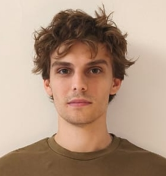
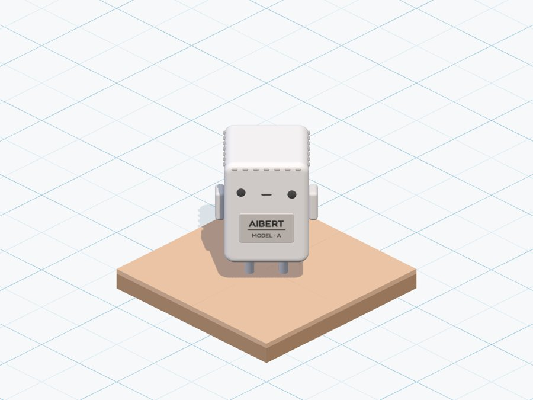
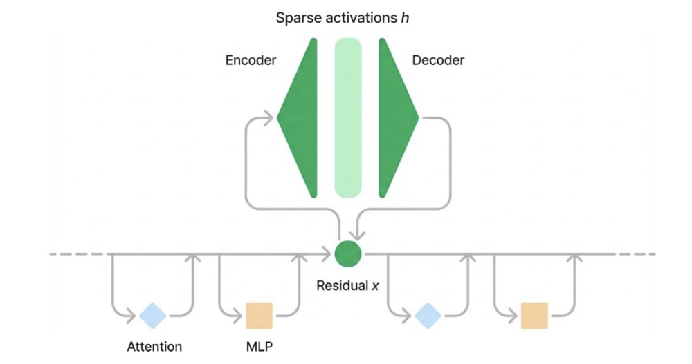
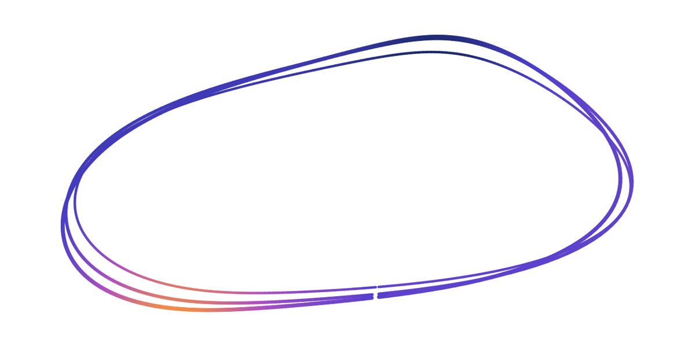
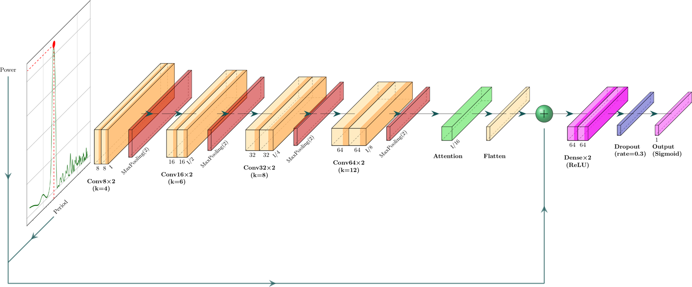
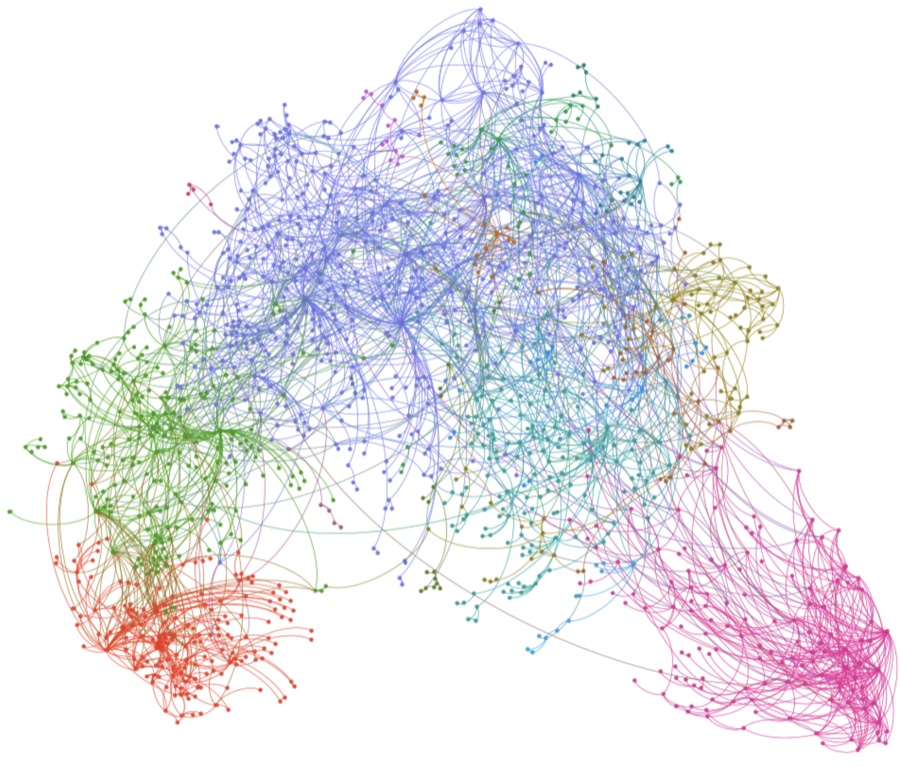

Nicolas Waehner
PhD student – Computational neuroscience, astrophysics & deep learning
I'm somewhere between astronomy and the brain.
About

I'm a PhD student in AI applied to neuroscience at the University of Buenos Aires, under the supervision of Enzo Tagliazucchi, and working with AstroAI at the Center for Astrophysics | Harvard & Smithsonian. I'm interested in interpretability and AI safety. I also play chess quite a lot.
I hold a Licenciatura in physics (BS + MS equivalent) from the University of Buenos Aires.
News
-
New paper — Towards Robust Biosignature Gas Detection in Exoplanet AtmospheresOct 2026
First-author paper at the NeurIPS 2026 ML4PS workshop, with Carolina Cuesta-Lazaro, Daniel Muthukrishna, Ana Glidden and Cecilia Garraffo.
-
New paper — The Platonic Brain: Representational Convergence in EEG Foundation ModelsOct 2026
First-author paper at a NeurIPS 2026 workshop, with Enzo Tagliazucchi, Jacobo Sitt, Demian Wassermann, Giovanni Franco Gabriel Marraffini and Trinidad Borrell.
-
Summer research program at the Center for Astrophysics | Harvard & SmithsonianJun 2026
Ten weeks in Cambridge with AstroAI, working on simulation-based inference for exoplanet atmospheric spectra.
-
Won the Y-Hat HackathonDec 2025
First place with interpretable memory retrieval using sparse autoencoders. GitHub, poster.
Papers
-
The Platonic Brain: Representational Convergence in EEG Foundation Models
NeurIPS 2026 Workshop on Foundation Models for the Brain and Body
We tested the Platonic Representation Hypothesis on 14 EEG foundation models. Models that decode brain-state markers better converge on more similar representations, tracking performance rather than size, and align more with language models in their global structure.
-
Towards Robust Biosignature Gas Detection in Exoplanet Atmospheres
NeurIPS 2026 Workshop on Machine Learning and the Physical Sciences (ML4PS)
Is there life elsewhere? Answering it comes down to how significant a biosignature gas detection is. A robust answer requires high-dimensional Bayesian inference over every plausible absorber, too slow for nested sampling. We find that Neural Ratio Estimation with a Savage-Dickey Density Ratio might overcome this: it is the most accurate of four neural estimators and stays calibrated over 21 parameters, matching nested sampling in about 5 ms per spectrum instead of hours.
Projects
-
Image

AIbert: a game about reward hacking
You play AIbert, a model that survives by gaming a flawed score instead of doing the task. An outreach game that makes reward hacking, a core AI safety problem, something you can play, built for the Game Night hackathon.
-
Image

Interpretable memory retrieval with sparse autoencoders
A retrieval system for long conversations that finds relevant past messages using sparse autoencoder features from inside a language model, combined with standard embeddings, so each retrieved memory can be traced to interpretable features.
-
Image

Simulation-based inference of neuron parameters
Neural posterior estimation applied to neuron equations (QIF, Morris–Lecar and Hodgkin–Huxley), comparing how well a neuron is characterised by its voltage trace or by its phase response curve. The PRC gives sharper posteriors where voltage alone stays ambiguous. With Octavio T. Puebla Pérez and Marcos M. Meo.
🏆 Honourable mention at LASCON X 2026
-
Image

ExoplANNET 2.0
A convolutional neural network that detects planetary signals in radial-velocity time series, with attention to show which parts of the periodogram it relies on. Part of my undergraduate thesis.
🏆 Best poster at SCIAA 2025 and honourable mention at EPDL 2025
-
Image

Argentine music collaboration network
A graph of who collaborates with whom among Argentine artists, built from Spotify data and analysed with network science tools.